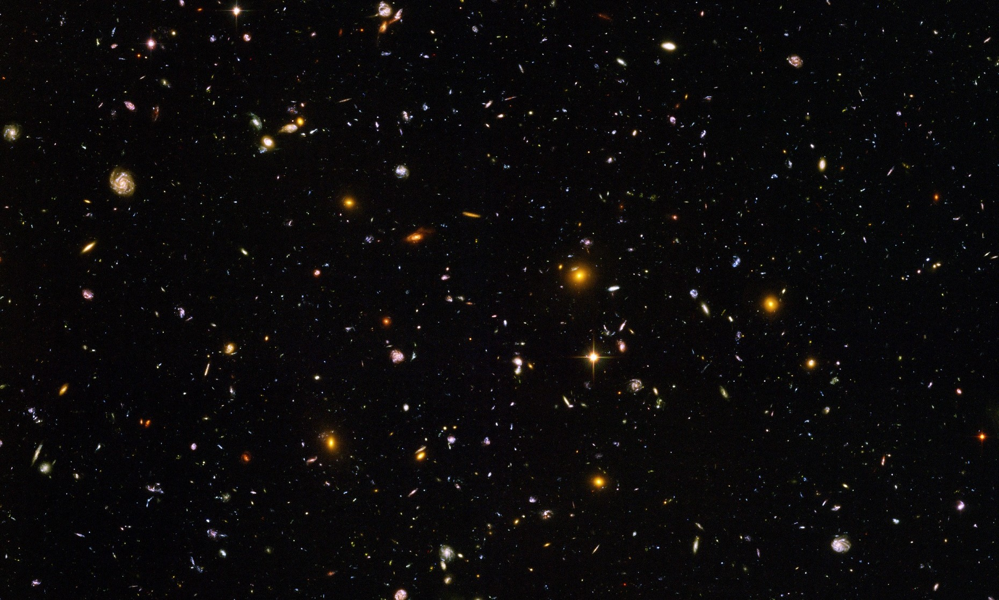

A végtelen univerzum

A világűr rengeteg érdekességet és titkot rejt. Csillagok, bolygók, galaxisok és más különleges égitestek találhatók benne. Az emberek már régóta kutatják az univerzumot, hogy többet tudjanak meg a körülöttünk lévő világról.
Mit találhatunk a világűrben?
- Csillagokat és csillagrendszereket
- Bolygókat és holdakat
- Távoli galaxisokat
- Fekete lyukakat
- Csillagködöket